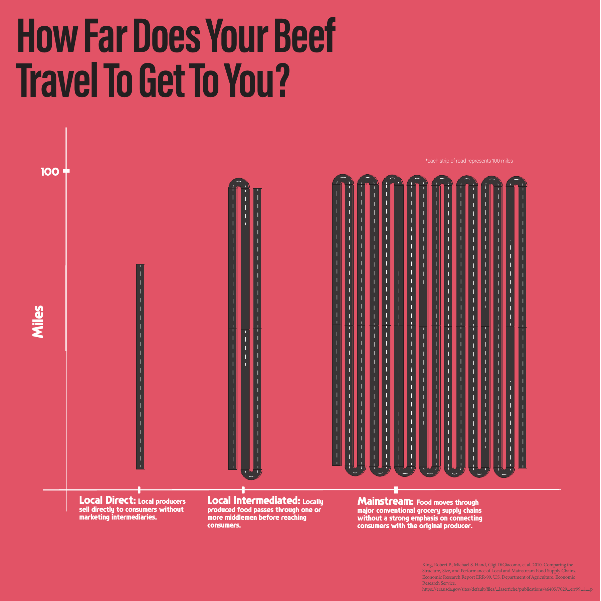

Environmental impacts
Why environmental impacts are hard to measure.
Scroll through the questions that make environmental comparisons complicated. The explanations will be added here soon.
System boundaries
Time and place
Tradeoffs between impacts
Data and uncertainty
Reference material
Data visualization
Explore the supporting visualization reference below.
